Chapter1 Computer System and Information Representation
1.1 Introduction to Computer Systems
Von-Neumann Model（冯·诺伊曼模型）:
- CPU
- Memory
- I/O System
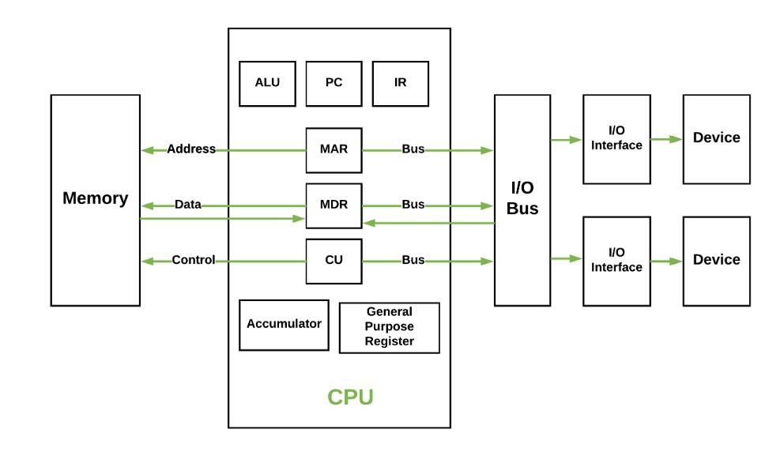
- ALU：算数逻辑单元
- PC：程序计数器
- IR：指令寄存器
- MAR：地址寄存器
- MDR：数据寄存器
- CU：控制器
Translator:
- Assembler：汇编器，将汇编语言翻译成机器语言，一般而言，生成的是目标代码，需要经过链接器生成可执行代码才可以执行
- Compiler：编译器，将源代码，即高级程序设计语言翻译成汇编语言或者机器语言，但不会执行
- Interpreter：解释器，直接读取源代码，即高级程序设计语言将其转换成计算机指令后立即执行
1.2 Binary Number Representation
Internal Data:
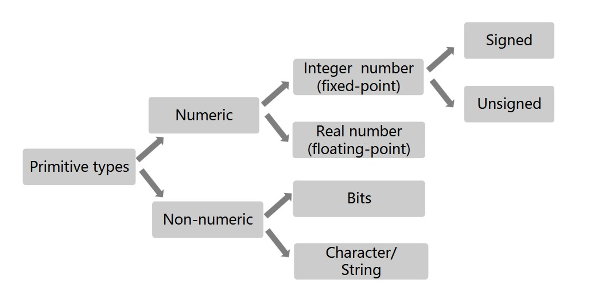
Carry Counting System（进位计数系统）:
将数字符号按序排列成数位，并遵照由低位到高位进位的方法进行计数，来表示数值的方法。
- 数位：数字在一个数中所处的位置
- 基数（radix）：每个数位上所能使用的数码的个数
- 位权：每个数位上的数码所代表的数值的大小
对于形如如下表示的数
$$A_{n-1}A_{n-2}···A_1A_0.A_{-1}A_{-2}···A_{-m+1}A_{-m}$$
其中$0\leqslant A_i<r$，每个$A_i$表示一个数码，或者说是数字符号，则这个数实际的大小为
$$(\sum\limits_{i=0}^{i=n-1}A_i·r^i)+(\sum\limits_{j=-m}^{j=-1}A_j·r^j)$$
前一部分为整数，后一部分为小数。
十进制转化二进制：
整数部分：连除
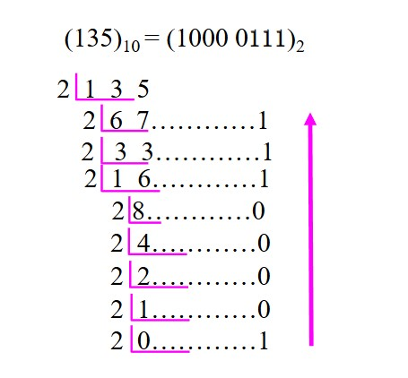
小数部分：连乘
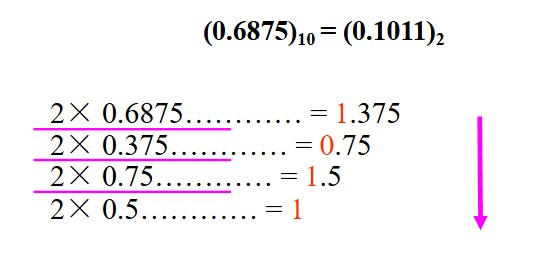
Note
并不是所有小数都能转化为二进制，如 0.65=0.1010011001001···
八进制/十六进制转化为二进制：
1 位八进制对应 3 位二进制
1 位十六进制对应 4 位二进制
Special Powers of 2:
- Kilo（K）：$2^{10}$
- Mega（M）：$2^{20}$
- Giga（G）：$2^{30}$
- Tera（T）：$2^{40}$
多义性：
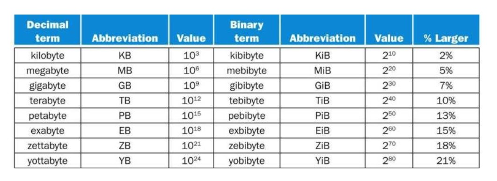
1.3 Arithmetic Operations
Addition with Carry:
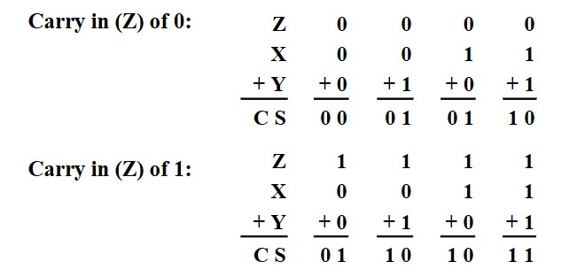
Subtraction with Borrow:
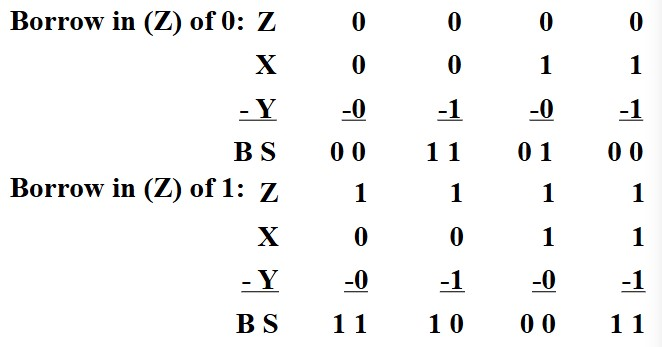
1.4 Representation of Numeric Data
Original Code（原码）:
对于有符号数，原码的最高位用于表示符号，1 为正， 0 为负。剩余的位即表示绝对值的大小. 因此，相反数只差一个最高位。
局限性： * 有两种方法表示 0 * 二进制加法不成立. 例如：0111 表示 +7，1010 表示 -2，其十进制相加本应为 +5，但二进制相加得到 0111，表示 +1. * 负数不能符号扩展，否则会改变原本的数值
Inverse Code（反码）:
正数与原码表示相同. 对于负数，最高位依旧为 1 ，但其余位相比于原码全部取反。
局限性：
- 还是有两种方法表示 0
- 计算还是有问题，但比原码好一点
但是负数的符号扩展有效。
Complement Code:
正数与原码表示相同. 对于相同的表示负数的二进制码，补码表示的值比反码小 1。所有原码和反码的局限性均消除。
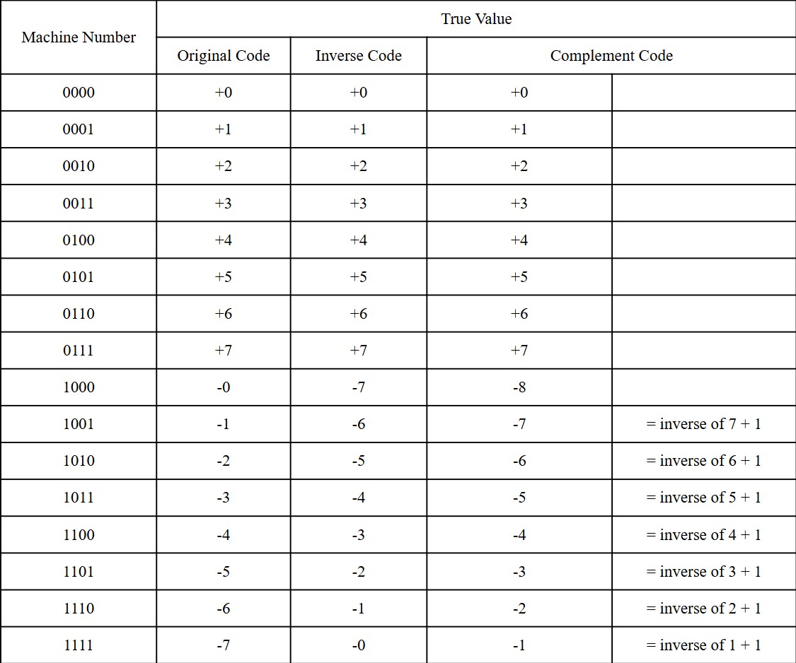
对于任意需要表示的数值$X_T$，其补码为
$$[X_T]_C=M+X_T(\mod M)$$
其中，若数值为 n 位，则 $M$ 为 $2^n$。
真值转化为补码：
- 正数：最高位为 0 ，其余位直接翻译
- 负数：最高位为 1 ，将绝对值对应的二进制码取反，然后加 1
补码转化为真值：
- 若最高位为 0 ，则表示正数，其余位直接翻译
- 若最高位为 1 ，则表示负数，先将其余位取反，然后加 1
补码的正负变换：
无论从正到负，还是从负到正，都是取反加 1。
Frameshift Code（移码）:
用于表示浮点数。
对于同一真值，对其补码的符号位取反得到其移码。
1.5 Representation of Integers in C
在 C 语言中，有符号整数和无符号整数可以相互转换，转换前后二进制码没变，但翻译方式改变。
Bit-Level Operations:
&，|，~，^
对于 long，int，short，char，unsigned 都适用
Logic Operations:
&&，||，！
0 为 False，非 0 为 True。
存在截断，即若第一个判断已经可以决定整个式子的真假，则不进行第二个式子的判断。
Shift Operations:
<<，>>
- 左移：右边全补 0
- 逻辑右移：左边全补 0
- 算术右移：左边全补符号位
Terminology:
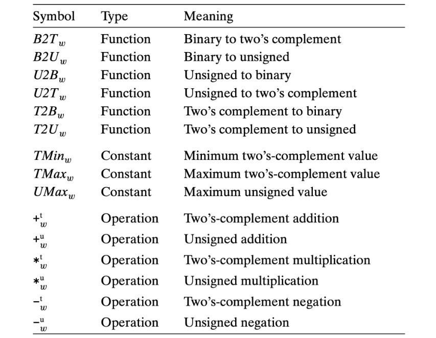
Example
对于二进制表示$X=x_{w-1}x_{w-2}···x_1x_0$：
$$B2T(X)=-x_{w-1}·2^{w-1}+\sum\limits_{i=0}^{w-2}x_i·2^i$$
Relation between Signed & Unsigned:
$ux=\begin{cases} x,x\geqslant 0\\ x+2^w,x<0 \end{cases}$
在 C 语言中，默认情况下都是有符号数，如果是无符号数，则在数字后带有“U”。
如果在单一表达式（<，>，==，<=，>=）中既有有符号数又有无符号数，则有符号数隐式转换为无符号数。
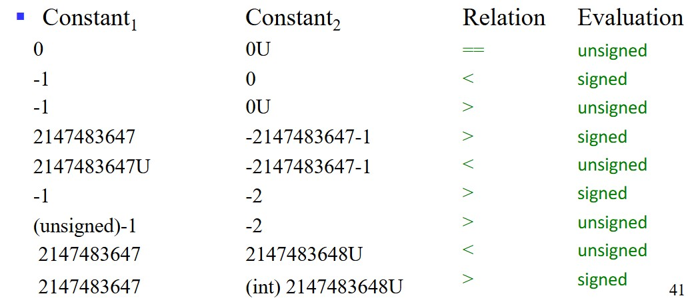
Signed Extension:
Expanding：short int $\rightarrow$ int
- 无符号数：补 0
- 有符号数：符号扩展
Others:
TAdd 和 UAdd 在二进制层面是相同的。
$UAdd_w(u,v)=\begin{cases} u+v,u+v\leqslant 2^w\\ u+v-2^w,u+v\geqslant 2^w \end{cases}$
$TAdd_w(u,v)=\begin{cases} u+v+2^w,u+v<TMin_w\\ u+v,TMin_w\leqslant u+v\leqslant TMax_w\\ u+v-2^w,TMax_w<u+v \end{cases}$
1.6 Floating-point Number Representation
IEEE Standard:
- 符号位：决定正负
- 尾数：在$[1,2)$的数
- 指数：对尾数乘SS 2 的幂次进行偏移
编码：

其中：
- s 编码符号位
- exp 编码指数，但不等于指数
- frac 编码尾数，但不等于尾数
Normalized Values:
对于exp：
首要条件：exp≠000···000或111···111
指数的实际大小：exp 得到的无符号数-偏移量，其中偏移量为$2^{k-1}-1$，$k$为 exp 的位数. 例如：单精度的偏移量为 127，双精度的偏移量为 1023。
对于 frac：
由于尾数的范围$[1,2)$，因此整数位必为 1，小数位后的数字编码到 frac 中. 因此，frac 最小表示为 000···000，此时尾数为 1。
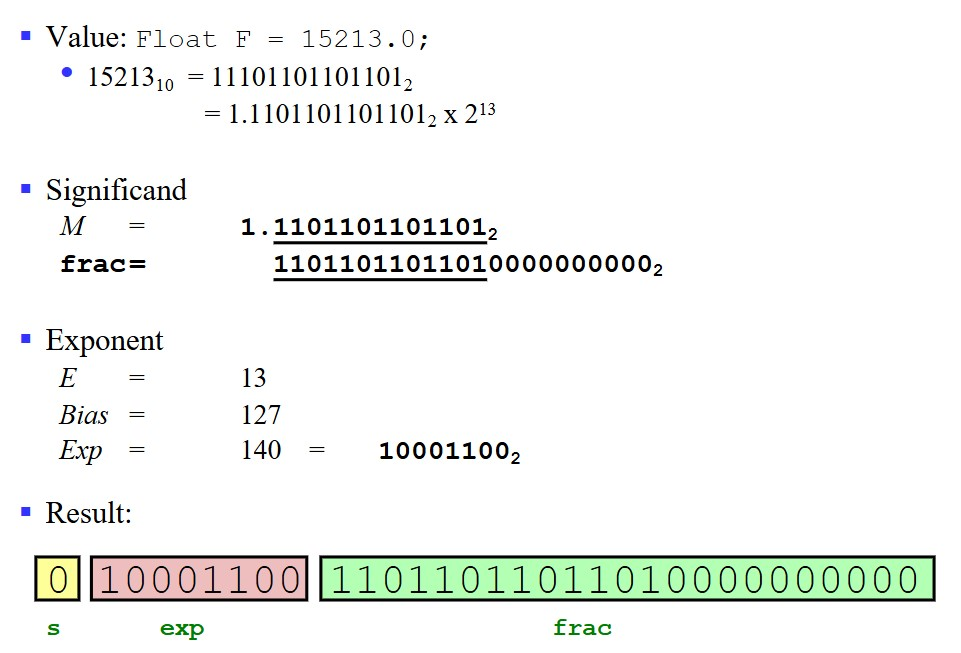
Denormalized Values:
exp=000···000 的情况：
此时指数应该被编码为 1-偏移量（不是 0-偏移量）
此时尾数小数点前的正数默认为 0（不是 1）
- exp=000···000，frac=000···000 则表示0
- exp=000···000，frac≠000···000 则表示十分接近 0 的数字
Special Values:
exp=111···111 的情况：
- 如果 frac=000···000，则表示无穷
- 如果 frac≠000···000，则表示非数字（NaN），如虚数，无穷乘上零等
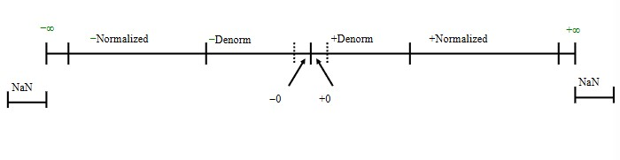
Rounding（舍入）:
| - | 1.4 | 1.6 | 1.5 | 2.5 | -1.5 |
|---|---|---|---|---|---|
| Towards zero（向0舍入） | 1 | 1 | 1 | 2 | -1 |
| Round down（向下舍入） | 1 | 1 | 1 | 2 | -2 |
| Round up（向上舍入） | 2 | 2 | 2 | 3 | -1 |
| Nearest even（最近舍入） | 1 | 2 | 2 | 2 | -2 |
其中，最近舍入又叫向偶数舍入，是 IEEE 默认的舍入模式，它和四舍五入只有一点不同，对.5的舍入上，采用取偶数的方式。
Rounding Binary Numbers（二进制数的舍入）:
以$xx.xxxxx_2$为例，假设要保留到小数点后 2 位，则要考虑后 3 位的大小，若后 3 位以 0 开头，则小于一半，直接舍掉，不进位. 若后 3 位比 100 大，则大于一半，进一位. 若后 3 位恰好为 100，则要看前面的数的奇偶，若前面的数是偶数，即小数点后第 2 位为 0，则直接舍弃，若为 1，则进位。
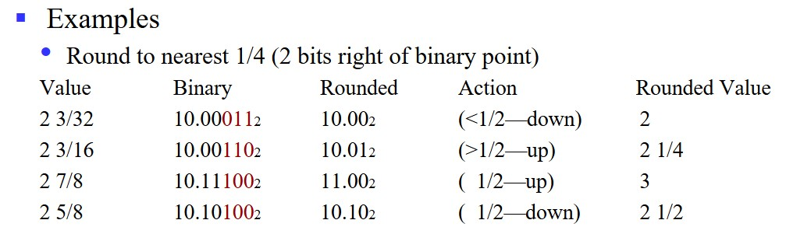
Floating Point in C:
- int：32位
- float：32位
- double：64位
float/double$\rightarrow$int:
扔掉小数部分，类似于向0舍入
int/double$\rightarrow$float:
可能会舍入
int/float$\rightarrow$double:
能够保留精确数值
Binary Codes for Decimal Digits（BCD）:
用 4 位二进制数表示 10 个十进制数码。
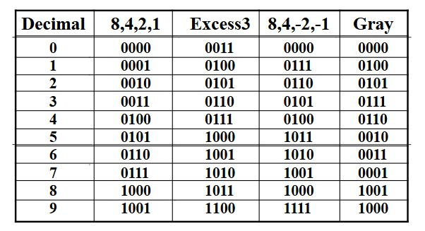
1.7 Representation of Non-numeric Data
ASCII:
一共 7 位，可以表示 94 个可显示字符和 34 个非显示字符。
- $0:48_{10}$
- $A:65_{10}$
- $a:97_{10}$
UNICODE:
将 ASCII 扩展成 16 位，支持更多语言的字符。
1.8 Data Width and Storage
Data Width and Unit:
一个系统多少位，表示的是 CPU 的地址总线宽度和数据总线为多少位。
Example
对于32位系统，地址总线宽度为 32 位，可以对应到$2^{32}$个地址，即 4GB。注意：每个地址锁定的最小可寻址单元为字节B。